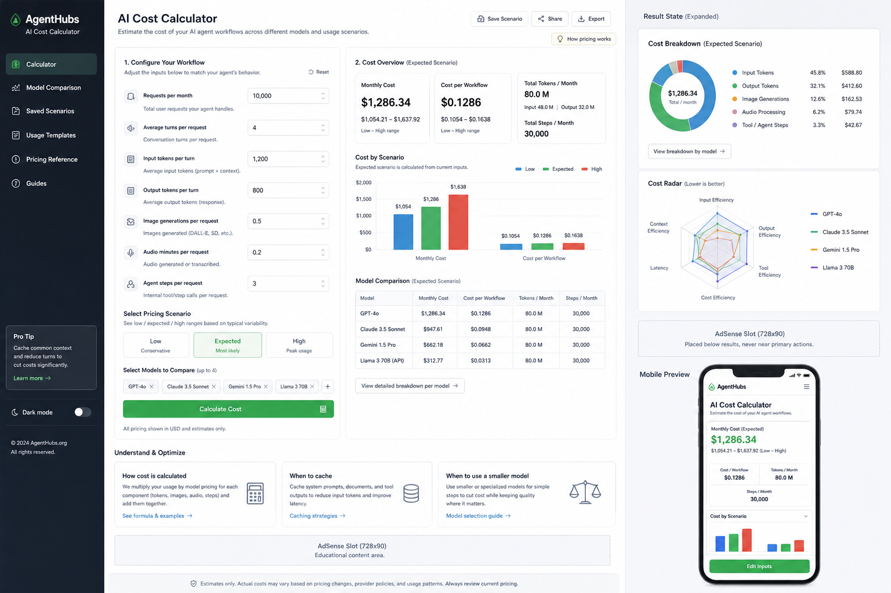

AI Lab
AI Cost Calculator
Estimate AI token, image, audio, and agent workflow costs with low, expected, and high monthly scenarios.
OutputCopy-ready result
AdsBelow task area
BuildStatic, fast, mobile-ready
Inputs
01 / 15Use Cases
Practical examples for users who need a useful first result, then a professional review pass.

Visual Direction
This pilot keeps the first viewport focused on the working tool while preserving the distinct interface direction prepared for this domain.
The concept image is kept as a reference asset for visual QA and future iteration.
FAQ
Short answers are placed after the tool so the task stays clean on mobile and desktop.
In-article ad slot reserved for guide or FAQ area